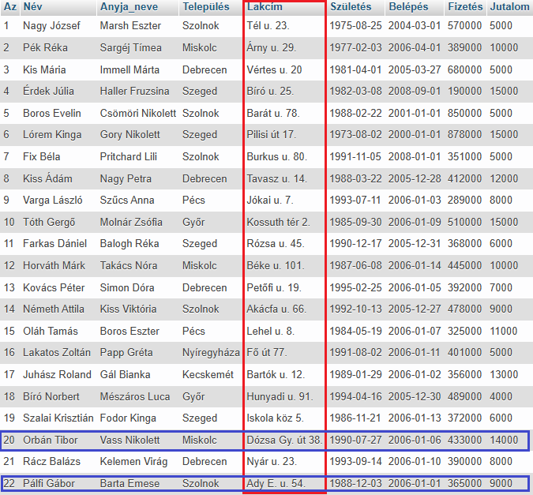
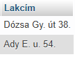

LIKE
A LIKE operátort egy WHERE utasításon belül arra használjuk, hogy egy adott mintát keressünk egy oszlop szöveges adatain belül. Sorok (rekord) szűrésére szolgál.
Két helyettesítő karaktert (wildcard) használnak gyakran a LIKE operátorral együtt:
- Százalékjel % - nulla, egy vagy több karaktert jelöl.
- Az aláhúzásjel _ egyetlen karaktert jelöl.
A százalékjel és az aláhúzásjel kombinációban is használható!
Példa:
SELECT Név, Település
FROM dolgozók
WHERE Település
LIKE "Sz%";


Látható, hogy az eredménytábla a kiválasztott mezőkből áll.
Míg a SELECT az oszlopokra (mező), addig a WHERE a sorokra (rekord) szűr. A kettő metszete adja vissza a eredménytáblát.
A Település oszlopban (mező) keresi a szűrő feltételnek megfelelő értékeket (Sz-szel kezdődő települések)!
Példa:
SELECT Lakcím
FROM dolgozók
WHERE Lakcím
LIKE "% % % %";


Látható, hogy az eredménytábla a kiválasztott mezőkből áll.
Míg a SELECT az oszlopokra (mező), addig a WHERE az oszlopkra szűr. A kettő metszete adja vissza a eredménytáblát.
A Lakcím oszlopban (mező) keresi a szűrő feltételnek megfelelő értékeket (Három szóközt tartalmaz)!